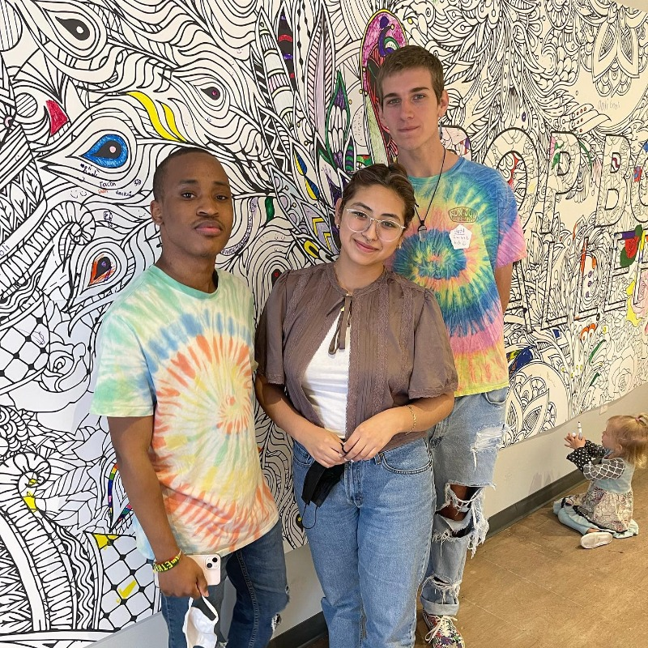
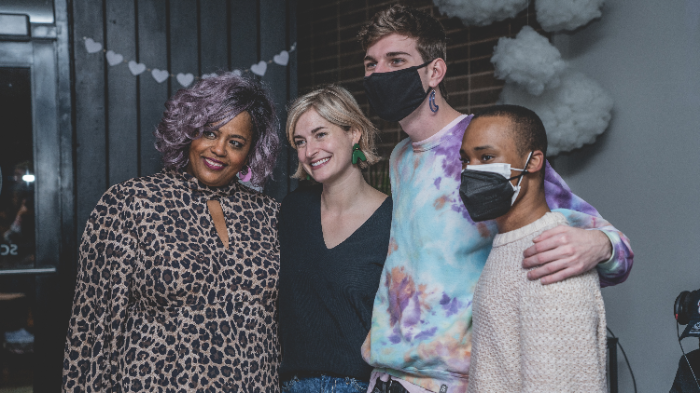

PROTOTYPE Digital Zine
from physical pop-up to internet permanence
During their three month residency at Boxyard RTP, Pop Box Gallery put on four incredible exhibits while serving as a zero commission gallery. During the fourth exhibit, PROTOTYPE, DurmPAC member Nori McDuffie served as a gallery attendant, sparking the connection and collaborative partnership of our dreams.
Having successfully produced Sawubona, Nori offered the collective's expertise in creating digital zines as a way to reflect on the exhibit and share it with those who could not attend in person. DurmPAC's digital designer, Jett Pavlica, began drafting a cover animation in April and continued defining the layout and look for the zine over the course of the summer. By August, the zine was ready for publication with eleven live animations showcasing seven selected forms from the exhibit.
to see the PROTOTYPE Digital Zine, click hereTo celebrate the launch of the zine and Pop Box Gallery's first year of projects, our organizations collaborated to throw a launch party at Bright Black in Durham's Lakewood neighborhood. The event featured a live DJ set, a cocktail inspired by one of the featured pentaprisms, and multiple projectors displaying both the zine and a series of immersive animations. We enjoyed a fantastic turnout and delightful night of art and community.
 return to homepage